6.1 Ecology
6.2 Ecological factors
6.3 Ecological adaptations
6.4 Dispersal of seeds and fruits
Ecology is a division of biology which deals with the study of environment in relation to
organisms. It can be studied by considering individual organisms, population, community, biome
or biosphere and their environment. While observing our different environments, one can ask questions like
Why do plants or animals vary with places QUESTION MARK
What are the causes for variation in biological diversity of different places QUESTION MARK
How soil, climate and other physical features affect the flora and fauna or vice versa QUESTION MARK
These questions can be better answered with the study of ecology.
Ecology is essentially a practical science involving experiments, continuous observations to predict how organisms react to particular environmental circumstances and understanding the principles involved in ecology.
The term “ecology” OPEN BRACKET oekologie CLOSE BRACKET is derived from two Greek words – oikos OPEN BRACKET meaning house or dwelling place and logos meaning study CLOSE BRACKET It was first proposed by Reiter OPEN BRACKET 1868 CLOSE BRACKET. However, the most widely accepted definition of ecology was given by Ernest Haeckel OPEN BRACKET 1869 CLOSE BRACKET.
R. Misra
Alexander von Humbolt - Father of Ecology
Eugene P. Odum - Father of modern Ecology
R. Misra - Father of Indian Ecology
“The study of living organisms, both plants and animals, in their natural habitats or homes.”- Reiter OPEN BRACKET 1885 CLOSE BRACKET
“Ecology is the study of the reciprocal relationship between living organisms and their environment.” - Earnest Haeckel OPEN BRACKET 1889 CLOSE BRACKET
The interaction of organisms with their environment results in the establishment of grouping of organisms which is called ecological hierarchy or ecological levels of organization. The basic unit of ecological hierarchy is an individual organism. The hierarchy of ecological systems is illustrated below:
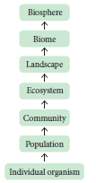
6. 1 .3 Branches of Ecology:
Ecology is mainly divided into two branches; they are autecology and synecology.
1. Autecology is the ecology of an individual species and is also called species ecology.
2. Synecology is the ecology of a population or community with one or more species and also called as community ecology.
Many advances and developments in the field ecology resulted in various new dimensions and branches. Some of the advanced fields are Molecular ecology, Eco technology, Statistical ecology and Environmental toxicology.
Habitat is a specific physical place or locality occupied by an organism or any species which has a particular combination of abiotic or environmental factors. But the environment of any community is called Biotope.
An ecological niche refers to an organism’s place in the biotic environment and its functional role in an ecosystem. The term was coined by the naturalist Roswell Hill Johnson but Grinell OPEN BRACKET 1917 CLOSE BRACKET was probably first to use this term. The habitat and niche of any organism is called Ecotope
The differences between habitat and niche are as follows.
|
Habitat |
Niche |
1. |
A specific physical space occupied by an organism OPEN BRACKET species CLOSE BRACKET |
A functional space occupied by an organism in the same eco-system |
2. |
Same habitat may be shared by many organisms OPEN BRACKET species CLOSE BRACKET |
A single niche is occupied by a single species |
3. |
Habitat specificity is exhibited by organism. |
Organisms may change their niche with time and season. |
Table 6.1: Difference between habitat and niche
Box item
DO YOU KNOW QUESTION MARK
Applied ecology or environmental technology:
Application of the Science of ecology is otherwise called as Applied ecology or Environmental technology. It helps us to manage and conserve natural resources, particularly ecosystems, forest and wild life conservative and management. Environmental management involves Bio-diversity conservation, Ecosystem restoration, Habitat management, Invasive species management, protected areas management and also help us plan landscapes and environmental impact designing for the futuristic ecology.
Application of the Science of ecology is otherwise called as Applied ecology or Environmental technology. It helps us to manage and conserve natural resources, particularly ecosystems, forest and wild life conservative and management. Environmental management involves Bio-diversity conservation, Ecosystem restoration, Habitat management, Invasive species management, protected areas management and also help us plan landscapes and environmental impact designing for the futuristic ecology.
Taxonomically different species occupying similar habitats OPEN BRACKET Niches CLOSE BRACKET in different geographical regions are called Ecological equivalents.
Examples:
Certain species of epiphytic orchids of Western Ghats of India differ from the epiphytic orchids of South America. But they are epiphytes.
Species of the grass lands of Western Ghats of India differ from the grass species of temperate grass lands of Steppe in North America. But they are all ecologically primary producers and fulfilling similar roles in their respective communities.
Many organisms, co-exist in an environment. The environment OPEN BRACKET surrounding CLOSE BRACKET includes physical, chemical and biological components. When a component surrounding an organism affects the life of an organism, it becomes a factor. All such factors together are called environmental factors or ecological factors. These factors can be classified into living OPEN BRACKET biotic CLOSE BRACKET and non-living OPEN BRACKET abiotic CLOSE BRACKET which make the environment of an organism. However the ecological factors are meaningfully grouped into four classes, which are as follows:
1. Climatic factors
2. Edaphic factors
3. Topographic factors
4. Biotic factors
We will discuss the above factors in a concise manner.
Box item
DO YOU KNOW QUESTION MARK
Flowers of poppy, chicory, dog rose and many other plants, blossom before the break of dawn OPEN BRACKET 4 – 5 am CLOSE BRACKET, evening primrose open up with the onset of dusk OPEN BRACKET 5 – 6 pm CLOSE BRACKET due to diurnal rhythm.
Flowers of poppy, chicory, dog rose and many other plants, blossom before the break of dawn OPEN BRACKET 4 to 5 am CLOSE BRACKET, evening primrose open up with the onset of dusk OPEN BRACKET 5 to 6 pm CLOSE BRACKET due to diurnal rhythm.
Climate is one of the important natural factors controlling the plant life. The climatic factors includes light, temperature, water, wind and fire.
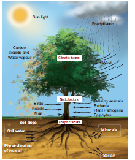
Figure 6.1: Environmental factors affecting a plant
Light is a well known factor needed for the basic physiological processes of plants, such as photosynthesis, transpiration, seed germination and flowering. The portion of the sunlight which can be resolved by the human eye is called visible light. The visible part of light is madeup of wavelength from about 400 nm OPEN BRACKET violet CLOSE BRACKET to 700 nm OPEN BRACKET red CLOSE BRACKET. The rate of photosynthesis is maximum at blue OPEN BRACKET 400 – 500 nm CLOSE BRACKET and red OPEN BRACKET 600 – 700 nm CLOSE BRACKET. The green OPEN BRACKET 500 – 600 nm CLOSE BRACKET wave length of spectrum is less strongly absorbed by plants.
Effects of light on plants
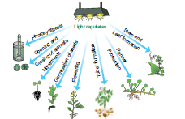
Figure 6.2: Various effects of light upon a green plant
Based on the tolerance to intensities of light, the plants are divided into two types. They are
1. Heliophytes - Light loving plants.
Example: Angiosperms.
2. Sciophytes - Shade loving plants.
Example: Bryophytes and Pteridophytes.
In deep sea OPEN BRACKET >500m CLOSE BRACKET, the environment is dark and its inhabitants are not aware of the existence of celestial source of energy called Sun. What, then is their source of energy QUESTION MARK
Palaeoclimatology–Helps to reconstruct past climates of our planet and flora, fauna and ecosystem in which they lived. Example: Air bubbles trapped in ice for tens of thousands of years with fossilized pollen, coral, plant and animal debris.
Temperature is one of the important factors which affect almost all the metabolic activities of an organism. Every physiological process in an organism requires an optimum temperature at which
it shows the maximum metabolic rate. Three limits of temperature can be recognized for any organism. They are
1. Minimum temperature – Physiological activities are lowest.
2. Optimum temperature – Physiological activities are maximum.
3. Maximum temperature – Physiological activities will stop.
Based on the temperature prevailing in an area, Raunkiaer classified the world’s vegetation into the following four types. They are megatherms, mesotherms, microtherms and hekistotherms. In thermal springs and deep sea hydrothermal vents the average temperature exceed 100 degree celcius.
Based on the range of thermal tolerance, organisms are divided into two types.
1. Eurythermal:
Organisms which can tolerate a wide range of temperature fluctuations.
Example: Zostera OPEN BRACKET A marine Angiosperm CLOSE BRACKET and Artemisia tridentata.
2. Stenothermal:
Organisms which can tolerate only small range of temperature variations.
Example: Mango and Palm OPEN BRACKET Terrestrial Angiosperms CLOSE BRACKET.
Mango plant does not grow in temperate countries like Canada and Germany.
Thermal Stratification
It is usually found in aquatic habitat. The change in the temperature profile with increasing depth
in a water body is called thermal stratification. There are three levels of thermal stratifications.
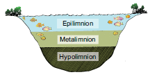
Figure 6.3: Thermal stratification of pond
1. Epilimnion – The upper layer of warmer water.
2. Metalimnion – The middle layer with a zone of gradual decrease in temperature.
3. Hypolimnion - The bottom layer of colder water.
Variations in latitude and altitude do affect the temperature and the vegetation on the earth
surface. The latitudinal and altitudinal zonation of vegetation is illustrated below:
Latitude:
Latitude is an angle which ranges from 00 at the equator to 900 at the poles.
Altitude:
How high a place is located above the sea level is called the altitude of the place.
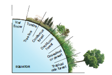
Figure 6.4: Latitudinal zonation of vegetation
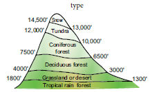
Figure 6.5: Altitudinal zonation of vegetation
It is an imaginary line in a mountain or higher areas of land that marks the level above which trees do not grow. The altitudinal limit of normal tree growth is about 3000 to 4000m.
Effects of temperature
The following physiological processes are influenced by temperature:
Temperature affects the enzymatic action of all the bio-chemical reactions in a plant body.
It influences CO2 and O2 solubility in the biological systems. Increases respiration and stimulates growth of seedlings.
Low temperature with high humidity can cause spread of diseases in plants.
The varying temperature with moisture determines the distribution of the vegetation types.
Water is one of the most important climatic factors. It affects the vital processes of all living
organisms. It is believed that even life had originated only in water during the evolution of Earth. Water covers more than 70 percentage of the earth’s surface. In nature, water is available to plants in three ways. They are atmospheric moisture, precipitation and soil water.
Box item
DO YOU KNOW QUESTION MARK
Evergreen forests – Found where heavy rainfall occurs throughout the year.
Sclerophyllous forests – Found where heavy rainfall occurs during winter and low rainfall during summer.
The productivity and distribution of plants depend upon the availability of water. Further the quality of water is also important especially for the aquatic organisms. The total amount of water salinity in different water bodies are :
1 CLOSE BRACKET. 5 percentage in inland water OPEN BRACKET Fresh water CLOSE BRACKET
2 CLOSE BRACKET. 30 to 35 percentage in sea water and iii CLOSE BRACKET. More than 100 percentage in hypersaline water OPEN BRACKET Lagoons CLOSE BRACKET Based on the range of tolerance of salinity, organisms are divided into two types.
1. Euryhaline:
Organisms which can live in water with wide range of salinity. Examples: Marine algae and marina angiosperms
2. Stenohaline:
Organisms which can withstand only small range of salinity. Example: Plants of estuaries.
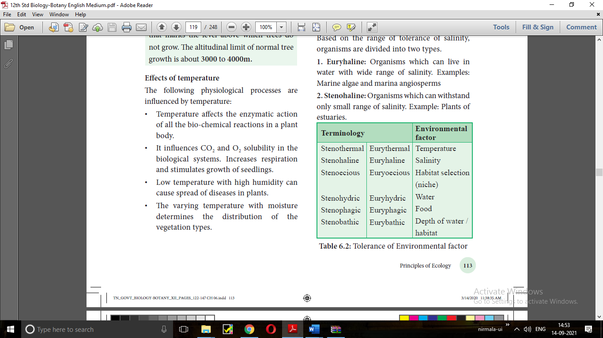
Table 6.2: Tolerance of Environmental factor
Examples of tolerance to toxicity
1. Soyabean and tomato manage to tolerate presence of cadmium poisoning by isolating cadmium and storing into few group of cells and prevent cadmium affecting other cells .
2. Rice and Eichhornia OPEN BRACKET water hyacinth CLOSE BRACKET tolerate cadmium by binding it to their proteins.
These plants otherwise can also be used to remove cadmium from contaminated soil ,this is
known as Phytoremediation.
Air in motion is called wind. It is also a vital ecological factor. The atmospheric air contains a number of gases, particles and other constituents. The composition of gases in atmosphere is as follows: Nitrogen -78 percentage , Oxygen -21 percentage , Carbon-di-oxide -0.03 percentage , Argon and other gases - 0.93 percentage .
The other components of wind are water vapour, gaseous pollutants, dust, smoke particles, microorganisms, pollen grains, spores, etc. Anemometer is the instrument used to measure the speed of wind.
Box item
DO YOU KNOW QUESTION MARK
Gases let out to atmosphere causes climatic change. Emission of dust and aerosols OPEN BRACKET small solids or liquid particles in suspension in the atmosphere CLOSE BRACKET from industries, automobiles, forest fire, So2 and DMS OPEN BRACKET dimethyl sulphur CLOSE BRACKET play an important role in disturbing the temperature level of any region. Aerosols with small particles is reflecting the solar radiation entering the atmosphere. This is known as Albedo effect. So it reduces the temperature OPEN BRACKET cooling CLOSE BRACKET limits, photosynthesis and respiration. The sulphur compounds are responsible for acid rain due to acidification of rain water and destroy the ozone.
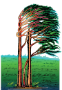
Figure 6.6: Flag form in trees
Wind is an important factor for the formation of rain
Causes wave formation in lakes and ocean, promotes aeration of water
Strong wind causes soil erosion and reduces soil fertility
Increases the rate of transpiration
Helps in pollination in anemophilous plants
It also helps in dispersal of many fruits, seeds, spores, etc.
Strong wind may cause up-rooting of big trees
Unidirectional wind stimulates the development of flag forms in trees.
Fire is an exothermic factor caused due to the chemical process of combustion, releasing heat and light. It is mostly man-made and sometimes develops naturally due to the friction between the tree surfaces. Fire is generally divided into
1. Ground fire – Which is flameless and subterranean.
2. Surface fire – Which consumes the herbs and shrubs.
3. Crown fire – Which burns the forest canopy.
Fire has a direct lethal effect on plants
Burning scars are the suitable places for the entry of parasitic fungi and insects
It brings out the alteration of light, rainfall, nutrient cycle, fertility of soil, pH, soil flora and fauna
Some fungi which grow in soil of burnt areas called pyrophilous.
Example: Pyronema confluens.
Indicators of fire – Pteris OPEN BRACKET fern CLOSE BRACKET and Pyronema OPEN BRACKET fungus CLOSE BRACKET indicates the burnt up and fire disturbed areas. So they are called indicators of fire.
Fire break – It is a gap made in the vegetation that acts as a barrier to slow down or stop the
progress of fire.
A natural fire break may occur when there is a lack of vegetation such as River, lake and canyon found in between vegetation may act as a natural fire break.
It is the structural defense by plants against fire .The outer bark of trees which extends to the last formed periderm is called Rhytidome. It is composed of multiple layers of suberized periderm, cortical and phloem tissues. It protects the stem against fire , water loss, invasion of insects and
prevents infections by microorganisms.
Edaphic factors, the abiotic factors related to soil, include the physical and chemical composition of the soil formed in a particular area. The study of soils is called Pedology.
Soil is the weathered superficial layer of the Earth in which plants can grow. It is a complex
composite mass consisting of soil constituents, soil water, soil air and soil organisms, etc.
Soil formation
Soil originates from rocks and develops gradually at different rates, depending upon the ecological
and climatic conditions. Soil formation is initiated by the weathering process. Biological weathering takes place when organisms like bacteria, fungi, lichens and plants help in the breakdown of rocks through the production of acids and certain chemical substances.
Based on soil formation OPEN BRACKET pedogenesis CLOSE BRACKET, the soils are divided into
1. Residual soils –These are soils formed by weathering and pedogenesis of the rock.
2. Transported soils – These are transported by various agencies.
The important edaphic factors which affect vegetation are as follows:
Plants absorbs rain water and moisture directly from the air
Soil water is more important than any other ecological factors affecting the distribution of plants. Rain is the main source of soil water. Capillary water held between pore spaces of soil particles and angles between them is the most important form of water available to the plants.
Soil may be acidic or alkaline or neutral in their reaction. pH value of the soil solution determines the availability of plant nutrients. The best pH range of the soil for cultivation of crop plants is 5.5 to 6.8.
Soil fertility and productivity is the ability of soil to provide all essential plant nutrients such as minerals and organic nutrients in the form of ions.
Soil temperature of an area plays an important role in determining the geographical distribution
of plants. Low temperature reduces use of water and solute absorption by roots.
The spaces left between soil particles are called pore spaces which contains oxygen and
carbon-di-oxide.
Many organisms existing in the soil like bacteria, fungi, algae, protozoans, nematodes, insects, earthworms, etc. are called soil organisms.
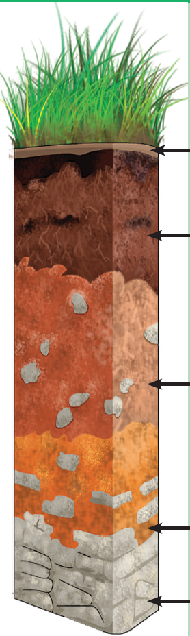
Figure 6.7: Soil Profile
Horizon |
Description |
1.O-HorizonOPEN BRACKET organic horizon CLOSE BRACKEThumus |
it consisits of fresh or partially decomposed organic matters O1-freshly fallen leaves, twigs, flowers and fruitsO2-dead plants animals and their excreta decomposed by micro-organisms Usally absent in agricultural and deserts
|
2.A.HorizonOPEN BRACKET Leached horizon CLOSE BRACKET |
it consists of top soil with humus,living creatures And in-organic materials A1-dark and rich in organic matter because of mixture Of organic and mineral matters A2- Light coloured layer with large sized mineral particles
|
3.B-Horizon OPEN BRACKET accumulation horizon CLOSE BRACKETOPEN BRACKET Subsoil -poor in humus, rich in minerals CLOSE BRACKET |
it consists of iron, aluminium and silica rich clay organic compounds |
4.C-Horizon OPEN BRACKET partially weathered horizon CLOSE BRACKET Weathered rock fragments little or no plant or animal life |
it consists of parent materials of soil, composed of little amount of organic matters without life forms
|
5.R.Horizon-OPEN BRACKET parent material CLOSE BRACKET bedrock |
it is a parent bed rock upon which underground water is found |
Soil is commonly stratified into horizons at different depth. These layers differ in their physical, chemical and biological properties. This succession of super-imposed horizons is called soil profile.
Based on the relative proportion of soil particles, four types of soil are recognized.
|
Soil type |
Size |
Relative proportion |
1. |
Clayey soil |
Less than 0.002 mm |
50 percentage clay and 50 percentage silt OPEN BRACKET cold SLASH heavy soil CLOSE BRACKET |
2. |
Silt soil |
0.002 to 0.02mm |
90 percentage silt and 10 percentage sand |
3. |
Loamy soil |
0.002 to 2mm |
70 percentage sand and 30 percentage clay SLASH silt or both OPEN BRACKET Garden soil CLOSE BRACKET |
4. |
Sandy soil |
0.2 to 2 mm |
85 percentage sand and 15 percentage clay OPEN BRACKET light soil CLOSE BRACKET |
Table 6.3: Types of soil particles
Loamy soil is ideal soil for cultivation. It consists of 70 percentage sand and 30 percentage clay or silt or both. It ensures good retention and proper drainage of water. The porosity of soil provides adequate
aeration and allows the penetration of roots.
Based on the water retention, aeration and mineral contents of soil, the distribution of vegetation
is divided into following types.
1. Halophytes:
Plants living in saline soils
2. Psammophytes:
Plants living in sandy soils
3. Lithophytes:
Plants living on rocky surface
4. Chasmophytes:
Plants living in rocky crevices
5. Cryptophytes:
Plants living below the soil surface
6. Cryophytes:
Plants living on surface of ice
7. Oxylophytes:
Plants living in acidic soil
8. Calciphytes:
Plants living in calcium rich alkaline soil.
Holard –Total soil water content
Chresard –Water available to plants
Echard – Water not available to plants
The surface features of earth are called topography. Topographic influence on the climate of any area is determined by the interaction of solar radiation, temperature, humidity, rainfall, latitude and altitude. It affects the vegetation through climatic variations in small areas OPEN BRACKET micro climate CLOSE BRACKET and even changes the soil conditions. Topographic factors include latitude, altitude, direction of mountain, steepness of mountain etc.
Latitudes represent distance from the equator. Temperature values are maximum at the equator
and decrease gradually towards poles. Different types of vegetation occur from equator to poles
which are illustrated below.
Height above the sea level forms the altitude. At high altitudes, the velocity of wind remains high, temperature and air pressure decrease while humidity and intensity of light increases. Due to these factors, vegetation at different altitudes varies, showing distinct zonation.
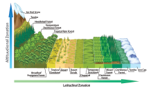
Figure 6.8: Latitudinal and Altitudinal Vegetation
North and south faces of mountain or hill possess different types of flora and fauna because they differ in their humidity, rainfall, light intensity, light duration and temperature regions.
The two faces of the mountain or hill receive different amount of solar radiation, wind action and rain. Of these two faces, the windward region possesses good vegetation due to heavy rains and the leeward region possesses poor vegetation due to rain shadows OPEN BRACKET rain deficit CLOSE BRACKET.
Similarly in the soil of aquatic bodies like ponds the center and edge possess different depth of water due to soil slope and different wave actions in the water body. Therefore, different parts of the same area may possess different species of organisms.
Ecotone - The transition zone between two ecosystems. Example: The border between forest and grassland.
Edge effect – Spices found in ecotone areas are unique due to the effect of the two habitats. This is called edge effect.
Example: Owl in the ecotone area between forest and grassland.
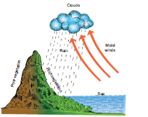
Figure 6.9: Steepness of mountain
The steepness of the mountain or hill allows the rain to run off. As a result the loss of water causes water deficit and quick erosion of the top soil resulting in poor vegetation. On the other hand, the plains and valley are rich in vegetation due to the slow drain of surface water and better retention of water in the soil.
The interactions among living organisms such as plants and animals are called biotic factors, which may cause marked effects upon vegetation. The effects may be direct and indirect and modifies the environment. The plants mostly which lives together in a community and influence one another. Similarly, animals in association with plants also affect the plant life in one or several ways. The different interactions among them can be classified into following two types they are positive interaction and negative interaction
When one or both the participating species are benefited, it is positive interaction. Examples; Mutualism and Commensalism.
It is an interaction between two species of organisms in which both are benefitted from the obligate association. The following are common examples of mutualism.
Nitrogen fixation
Rhizobium OPEN BRACKET Bacterium CLOSE BRACKET forms nodules in the roots of leguminous plants and lives symbiotically.
The Rhizobium obtains food from leguminous plant and in turn fixes atmospheric nitrogen into
nitrate, making it available to host plants.
Other examples:
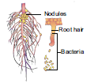
Figure 6.10: A nodulated legume plant root with bacteria
Water fern OPEN BRACKET Azolla CLOSE BRACKET and Nitrogen fixing Cyanobacterium OPEN BRACKET Anabaena CLOSE BRACKET.
Anabaena present in coralloid roots of Cycas. OPEN BRACKET Gymnosperm CLOSE BRACKET
Cyanobacterium OPEN BRACKET Nostoc CLOSE BRACKET found in the thalloid body of Anthoceros.OPEN BRACKET Bryophytes CLOSE BRACKET
Wasps present in fruits of fig.
Lichen is a mutual association of an alga and a fungus.
Roots of terrestrial plants and fungal hyphae- Mycorrhiza
It is an interaction between two organisms in which one is benefitted and the other is neither benefitted nor harmed. The species that derives benefit is called the commensal, while the other species is called the host. The common examples of commensalism are listed below:
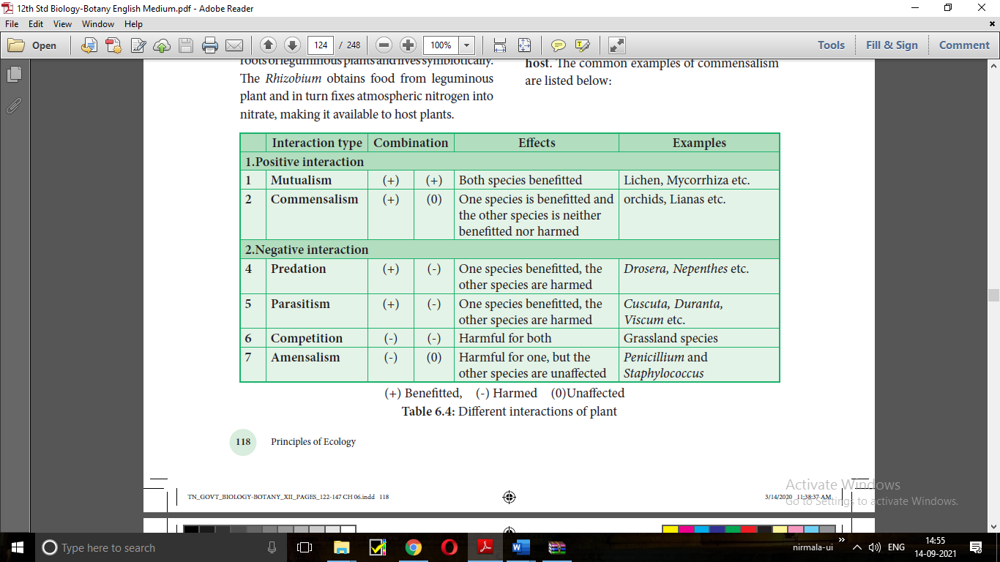
Table 6.4: Different interactions of plant OPEN BRACKET plus CLOSE BRACKET Benefitted, OPEN BRACKET - CLOSE BRACKET Harmed OPEN BRACKET 0 CLOSE BRACKETUnaffected
The plants which are found growing on other plants without harming them are called epiphytes. They are commonly found in tropical rain forest.
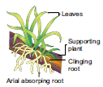
Figure 6.11: An epiphytic plant-Vanda
The epiphytic higher plant OPEN BRACKET Orchid CLOSE BRACKET gets its nutrients and water from the atmosphere with the
help of the hygroscopic roots which contain special type of spongy tissue called Velamen. It prepares its own food and does not depend on the host. Using the host plant only they support and does not harm it in any way.
Many orchids, ferns, lianas, hanging mosses, Peperomia, money plant and Usnea OPEN BRACKET Lichen CLOSE BRACKET are
some of the examples of epiphytes.
Spanish Moss –Tillandsia grows on the bark of Oak and Pine trees.
DO YOU KNOW QUESTION MARK
Proto Cooperation
An interaction between organisms of different species in which both organisms benefit but neither is dependent on the relationship. Example: Soil bacteria SLASH fungi and plants growing in the soil.
When one of the interacting species is benefitted and the other is harmed, it is called negative interaction. Examples: predation, parasitism, competition and amensalism.
It is an interaction between two species, one of which captures, kills and eats up the other. The species which kills is called a predator and the species which is killed is called a prey. The predator is benefitted while the prey is harmed.
Examples:
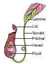
Figure 6.12: Pitcher plant – with insect
A number of plants like Drosera OPEN BRACKET Sun dew Plant CLOSE BRACKET, Nepenthes OPEN BRACKET Pitcher Plant CLOSE BRACKET, Dionaea OPEN BRACKET Venus fly trap CLOSE BRACKET, Utricularia OPEN BRACKET Bladder wort CLOSE BRACKET and Sarracenia are predators which consume insects and other small animals for their food as a source of nitrogen. They are also called as insectivorous plants.
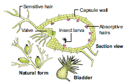
Figure 6.13: Insectivorous plant Utricularia
Many herbivores are predators. Cattles, Camels, Goats etc., frequently browse on the tender shoots of herbs, shrubs and trees. Generally annuals suffer more than the perennials. Grazing and browsing may cause remarkable changes in vegetation. Nearly 25 percent of all insects are known
as phytophagousOPEN BRACKET feeds on plant sap and other parts of plant CLOSE BRACKET
Many defense mechanisms are evolved to avoid their predations by plants. Examples: Calotropis produces highly poisonous cardiac glycosides, Tobacco produces nicotine, coffee plants produce caffeine, Cinchona plant produces quinine. Thorns of Bougainvillea, spines of Opuntia, and latex of cacti also protect them from predators.
It is an interaction between two different species in which the smaller partner OPEN BRACKET parasite CLOSE BRACKET obtains food from the larger partner OPEN BRACKET host or plant CLOSE BRACKET. So the parasitic species is benefited while the host species is harmed. Based on the host-parasite relationship, parasitism is classified into two types they are holoparasite and hemiparasite.
The organisms which are dependent upon the host plants for their entire nutrition are called Holoparasites. They are also called total parasites.
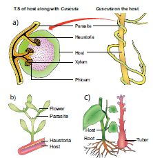
Figure 6.14: a CLOSE BRACKET Holoparasite – Cuscuta b CLOSE BRACKET A Partial stem parasite – Viscum
c CLOSE BRACKET Root parasite on the brinjal root Orobanche spp.
Examples:
Cuscuta is a total stem parasite of the host plant Acacia, Duranta and many other plants. Cuscuta even gets flower inducing hormone from its host plant.
Balanophora, Orobanche and Rafflesia are the total root parasites found on higher plants.
The organisms which derive only water and minerals from their host plant while synthesizing their own food by photosynthesis are called Hemiparasites. They are also called partial parasites.
Examples:
Viscum and Loranthus are partial stem parasites.
Santalum OPEN BRACKET Sandal Wood CLOSE BRACKET is a partial root parasite.
The parasitic plants produce the haustorial roots inside the host plant to absorb nutrients from the vascular tissues of host plants.
It is an interaction between two organisms or species in which both the organisms or species are harmed. Competition is the severest in population that has irregular distribution. Competition is classified into intraspecific and interspecific.
It is an interaction between individuals of the same species. This competition is very severe
because all the members of species have similar requirements of food, habitat, pollination etc. and they also have similar adaptations to fulfill their needs.
It is an interaction between individuals of different species. In grassland, many species of grasses grow well as there is little competition when enough nutrients and water is available. During drought shortage of water occurs. A life and death competition starts among the different species of grass lands. Survival in both these competitions is determined by the quantity of nutrients, availability of water and migration to new areas. Different species of herbivores, larvae and grass hopper competing for fodder or forage plants. Trees, shrubs and herbs in a forest struggle for sunlight, water and nutrients and also for pollination and dispersal of fruits and seeds. The Utricularia OPEN BRACKET Bladderwort CLOSE BRACKET competes with tiny fishes for small crustaceans and insects.
It is an interspecific interaction in which one species is inhibited while the other species is neither benefitted nor harmed. The inhibition is achieved by the secretion of certain chemicals called allelopathic substances. Amensalism is also called antibiosis.
Penicillium notatum produces penicillin to inhibit the growth of a variety of bacteria especially Staphylococcus.
Trichoderma inhibits the growth of fungus Aspergillus.
Roots and hulls of Black Walnut Juglans nigra secretes an alkaloid Juglone which inhibits the growth of seedlings of Apple, Tomato and Alfalfa around it.
Interspecific interactionsSLASH Co-evolutionary dynamics
1. Mimicry:
It is a phenomenon in which living organism modifies its form, appearance, structure or behavior and looks like another living organism as a self defence and increases the chance of its survival. Floral mimicry is for usually inviting pollinators but animal mimicry is often protective. Mimicry is a result of evolutionary significance due to shape and sudden heritable mutation and preservation by natural selection.
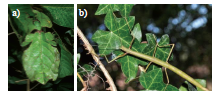
Figure 6.15: Mimicry. a CLOSE BRACKET Phyllium frondosum b CLOSE BRACKET Carausium morosus
Example:
The plant, Ophrys an orchid, the flower looks like a female insect to attract the male insect to get pollinated by the male insect and it is otherwise called ‘floral mimicry ‘.
Carausium morosus – stick insect or walking stick. It is a protective mimicry.
Phyllium frondosum – leaf insect, another example of protective mimicry.
2. Myrmecophily:
Sometimes, ants take their shelter on some trees such as Mango, Litchi, Jamun, Acacia etc. These ants act as body guards of the plants against any disturbing agent and the plants in turn provide food and shelter to these ants. This phenomenon is known as Myrmecophily. Example: Acacia and acacia ants.
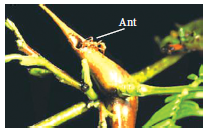
Figure 6.16: Myrmecophily
3. Co-evolution:
The interaction between organisms, when continues for generations, involves reciprocal changes in genetic and morphological characters of both organisms. This type of evolution is called Co-evolution. It is a kind of co-adaptation and mutual change among interactive species.
Examples:
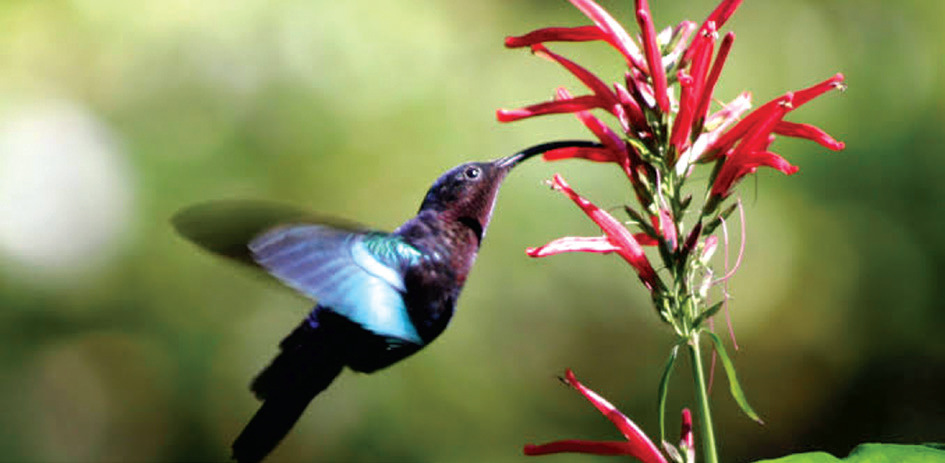
Figure 6.17: Co-evolution
Corolla length and proboscis length of butterflies and moths OPEN BRACKET Habenaria and Moth CLOSE BRACKET.
Bird’s beak shape and flower shape and size.
More examples: Horn bills and birds of Scrub jungles, Slit size of pollinia of Apocynaceae members and leg size of insects.
The modifications in the structure of organisms to survive successfully in an environment are called adaptations of organisms. Adaptations help the organisms to exist under the prevailing ecological habitat. Based on the habitats and the corresponding adaptations of plants, they are classified as hydrophytes, xerophytes, mesophytes, epiphytes and halophytes.
The plants which are living in water or wet places are called hydrophytes. According to their relation to water and air, they are subdivided into following categories:
1 CLOSE BRACKET Free floating hydrophytes,
2 CLOSE BRACKET Rooted- floating hydrophytes,
3 CLOSE BRACKET Submerged floating hydrophytes,
4 CLOSE BRACKET Rooted -submerged hydrophytes,
5 CLOSE BRACKET Amphibious hydrophytes.
These plants float freely on the surface of water. They remain in contact with water and air, but not with soil. Examples: Eichhornia, Pistia and Wolffia OPEN BRACKET smallest flowering plant CLOSE BRACKET.
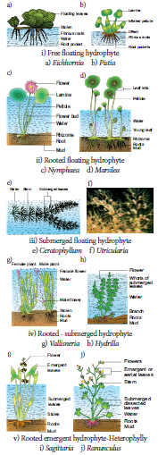
Figure 6.18: Hydrophytes
In these plants, the roots are fixed in mud, but their leaves and flowers are floating on the surface of water. These plants are in contact with soil, water and air. Examples: Nelumbo, Nymphaea, Potomogeton and Marsilea.
Lotus seeds show highest longevity in plant kingdom.
These plants are completely submerged in water and not in contact with soil and air. Examples:
Ceratophyllum and Utricularia.
These plants are completely submerged in water and rooted in soil and not in contact with air.
Examples: Hydrilla, Vallisneria and Isoetes.
5. Amphibious hydrophytes
OPEN BRACKET Rooted emergent hydrophytes CLOSE BRACKET:
These plants are adapted to both aquatic and terrestrial modes of life. They grow in shallow water. Examples: Ranunculus, Typha and Sagittaria.
The plants which can grow in moist damp and shady places are called hygrophytes. Examples: Habenaria OPEN BRACKET Orchid CLOSE BRACKET, Mosses OPEN BRACKET Bryophytes CLOSE BRACKET, etc.
In root
Roots are totally absent in Wolffia and Salvinia or poorly developed in Hydrilla or well developed in Ranunculus.
The root caps are replaced by root pockets. Example: Eichhornia
In stem
The stem is long, slender, spongy and flexible in submerged forms.
In free floating forms the stem is thick, short stoloniferous and spongy; and in rooted floating forms, it is a rhizome .
Vegetative propagation is through runners, stolon, stem and root cuttings , tubers, dormant
apices and offsets.
In leaves
The leaves are thin, long and ribbon shaped in Vallisneria or long and linear in Potamogeton or finely dissected in Ceratophyllum
The floating leaves are large and flat as in Nymphaea and Nelumbo. In Eichhornia and Trapa petioles become swollen and spongy.
In emergent forms, the leaves show heterophylly OPEN BRACKET Submerged leaves are dissected and aerial leaves are entire CLOSE BRACKET. Example: Ranunculus, Limnophila heterophylla and Sagittaria
Cuticle is either completely absent or if present it is thin and poorly developed
Single layer of epidermis is present
Cortex is well developed with aerenchyma
Vascular tissues are poorly developed. In emergent forms vascular elements are well developed.
Mechanical tissues are generally absent except in some emergent forms. Pith cells are sclerenchymatous.
Hydrophytes have the ability to withstand anaerobic conditions .
They possess special aerating organs.
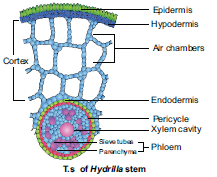
Figure 6.19: T.S. of Hydrilla stem
The plants which are living in dry or xeric condition are known as Xerophytes. Xerophytic habitat can be of two different types. They are:
In these habitats, soil has a little amount of water due to the inability of the soil to hold water because of low rainfall.
In these habitats, water is sufficiently present but plants are unable to absorb it because of the absence of capillary spaces. Example: Plants in salty and acidic soil.
Based on adaptive characters xerophytes are classified into three categories. They are Ephemerals, Succulents and Non succulent plants.
These are also called drought escapers or drought evaders. These plants complete their life cycle within a short period OPEN BRACKET single season CLOSE BRACKET. These are not true xerophytes.
Examples: Argemone, Mollugo, Tribulus and Tephrosia.
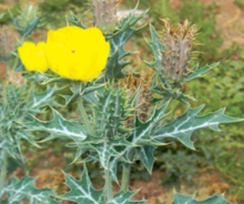
Figure 6.20: Argemone mexicana-Ephemerals
These are also called drought enduring plants. These plants store water in their plant parts during the dry period. These plants develop certain adaptive characters to resist extreme drought conditions.
Examples: Opuntia, Aloe, Bryophyllum and Begonia.
These are also called drought resistant plants OPEN BRACKET true xerophytes CLOSE BRACKET. They face both external and internal dryness. They have many adaptations to resist dry conditions. Examples: Casuarina, Nerium, Zizyphus and Acacia.
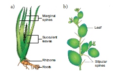
Figure 6.21: a CLOSE BRACKETSucculent xerophyte – Aloe b CLOSE BRACKET Non succulent perennial – Ziziphus
In root
Root system is well developed and is greater than that of shoot system.
Root hairs and root caps are also well developed.
In xerophytic plants with the leaves and stem are covered with hairs are called trichophyllous plants . Example: Cucurbits OPEN BRACKET Melothria and Mukia CLOSE BRACKET
In stem
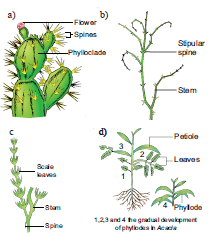
Figure 6.22: Xerophytes
a CLOSE BRACKET A succulent xerophyte: Phylloclade – opuntia
b CLOSE BRACKET Non succulent: Perennial - Capparis
c CLOSE BRACKET Cladode of Asparagus
d CLOSE BRACKET Phyllode – Acacia
Stems are mostly hard and woody. They may be aerial or underground
The stems and leaves are covered with wax coating or covered with dense hairs.
In some xerophytes all the internodes in the stem are modified into a fleshy leaf structure called phylloclades OPEN BRACKET Opuntia CLOSE BRACKET .
In some of the others single or occasionally two internodes modified into fleshy green structure called cladode OPEN BRACKET Asparagus CLOSE BRACKET.
In some the petiole is modified into a fleshy leaf like structure called phyllode OPEN BRACKET Acacia melanoxylon CLOSE BRACKET.
In leaves
Leaves are generally leathery and shiny to reflect light and heat.
In some plants like Euphorbia, Acacia, Ziziphus and Capparis, the stipules are modified into spines.
The entire leaves are modified into spines OPEN BRACKET Opuntia CLOSE BRACKET or reduced to scales OPEN BRACKET Asparagus CLOSE BRACKET.
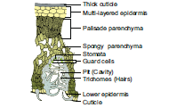
Figure 6.23: T.S. of Nerium leaf
Presence of multilayered epidermis with heavy cuticle to prevent water loss due to transpiration.
Hypodermis is well developed with sclerenchymatous tissues.
Sunken stomata are present only in the lower epidermis with hairs in the sunken pits.
Scotoactive type of stomata found in succulent plants .
Vascular bundles are well developed with several layered bundle sheath.
Mesophyll is well differentiated into palisade and spongy parenchyma.
In succulents the stem possesses a water storage region.
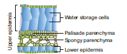
Figure 6.24: A Succulent leaf of Peperomia OPEN BRACKET T.S. CLOSE BRACKET OPEN BRACKET lateral wing portion only CLOSE BRACKET
Most of the physiological processes are designed to reduce transpiration.
Life cycle is completed within a short period OPEN BRACKET Ephemerals CLOSE BRACKET.
The plants which are living in moderate conditions OPEN BRACKET neither too wet nor too dry CLOSE BRACKET are known as mesophytes. These are common land plants. Example: Maize and Hibiscus.
Morphological adaptations
Root system is well developed with root caps and root hairs
Stems are generally aerial, stout and highly branched.
Leaves are generally large, broad, thin with different shapes.
Anatomical adaptations
Cuticle in aerial parts are moderately developed.
Epidermis is well developed and stomata are generally present on both the epidermis.
Mesophyll is well differentiated into palisade and spongy parenchyma.
Vascular and mechanical tissues are fairly developed and well differentiated.
Physiological adaptations
All physiological processes are normal.
Temporary wilting takes place at room temperature when there is water scarcity.
Tropophytes are plants which behave as xerophytes at summer and behave as mesophytes OPEN BRACKET or CLOSE BRACKET hydrophytes during rainy season.
Epiphytes
Epiphytes are plants which grow perched on other plants OPEN BRACKET Supporting plants CLOSE BRACKET. They use the supporting plants only as shelter and not for water or food supply. These epiphytes are commonly seen in tropical rain forests. Examples: Orchids, Lianas, Hanging Mosses and Money plant.
Morphological adaptations
Root system is extensively developed. These roots may be of two types. They are Clinging roots and Aerial roots.
Clinging roots fix the epiphytes firmly on the surface of the supporting objects.
Aerial roots are green coloured roots which may hang downwardly and absorb moisture from the atmosphere with the help of a spongy tissue called velamen.
Stem of some epiphytes are succulent and develop pseudobulb or tuber.
Generally the leaves are lesser in number and may be fleshy and leathery
Myrmecophily is a common occurrence in the epiphytic vegetation to prevent the predators.
The fruits and seeds are very small and usually dispersed by wind, insects and birds.
Anatomical adaptations
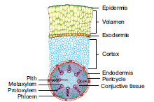
Figure 6.25: T.S. of an aerial root of Orchid showing velamen tissue
Multilayered epidermis is present. Inner to the velamen tissue, the peculiar exodermis layer is present.
Presence of thick cuticle and sunken stomata greatly reduces transpiration.
Succulent epiphytes contain well developed parenchymatous cells to store water.
Physiological adaptations
Special absorption processes of water by velamen tissue .
Halophytes
There are special type of Halophytic plants which grow on soils with high concentration of salts. Examples: Rhizophora, Sonneratia and Avicennia.
Halophytes are usually found near the seashores and Estuaries. The soils are physically wet but physiologically dry. As plants cannot use salt water directly they require filtration of salt using physiological processes. This vegetation is also known as mangrove forest and the plants are called mangroves.
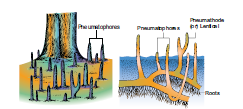
Figure 6.26a: Pneumatophores of mangrove plant
Morphological adaptations
The temperate halophytes are herbaceous but the tropical halophytes are mostly bushy
In addition to the normal roots, many stilt roots are developed
A special type of negatively geotropic roots called pneumatophores with pneumathodes to get sufficient aeration are also present. They are called breathing roots. Example: Avicennia
Presence of thick cuticle on the aerial parts of the plant body
Leaves are thick, entire, succulent and glossy. Some species are aphyllous OPEN BRACKET without leaves CLOSE BRACKET.
Viviparous mode of seed germination is found in halophytes
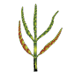
Figure 6.26b: Succulent halophyte – Salicornia
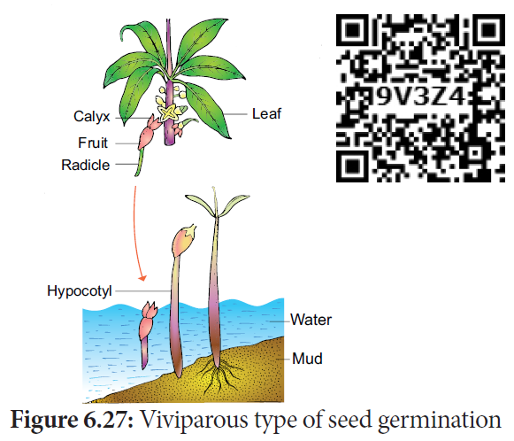
Figure 6. 27: Viviparous type of seed germination
Epidermal cells of stem is heavy cutinized, almost squarish and are filled with oil and tannins.
‘Star’ shaped sclereids and ‘H’ shaped heavy thickened spicules that provide mechanical strength to cortex are present in the stem.
The leaves may be dorsiventral or isobilateral with salt secreting glands.
Physiological adaptations
High osmotic pressure exists in some plants .
Seeds germinate in the fruits while on the mother plant OPEN BRACKET Vivipary CLOSE BRACKET.
Out of three districts of Tamil Nadu OPEN BRACKET Nagapattinam, Thanjavur and Thiruvarur CLOSE BRACKET, Muthupet OPEN BRACKET Thiruvarur district CLOSE BRACKET was less damaged by Gaja cyclone OPEN BRACKET November 2018 CLOSE BRACKET due to the presence of mangrove forest.
Both fruits and seeds possess attractive colour, odour, shape and taste needed for the dispersal by birds, mammals, reptiles, fish, ants and insects even earthworms. The seed consists of an embryo, stored food material and a protective covering called seed coat. As seeds contain miniature but dormant future plants, their dispersal is an important criterion for distribution and establishment of plants over a wide geographical area. The dissemination of seeds and fruits to various distances from the parent plant is called seed and fruit dispersal. It takes place with the help of ecological factors such as wind, water and animals.
Seed dispersal is a regeneration process of plant populations and a common means of colonizing new areas to avoid seedling level competition and from natural enemies like herbivores, frugivores and pathogens.
Fruit maturation and seed dispersal is influenced by many ecologically favourable conditions such as Season OPEN BRACKET Example: Summer CLOSE BRACKET, suitable environment, and seasonal availability of dispersal agents like birds, insects etc.
Seeds require agents for dispersal which are crucial in plant community dynamics in many ecosystems around the globe. They offer many benefits to communities such as food and nutrients, migration of seeds across habitats and helps spreading plant genetic diversity.
The individual seeds or the whole fruit may be modified to help for the dispersal by wind. Wind dispersal of fruits and seeds is quite common in tall trees. The adaptation of the wind dispersed plants are
Minute seeds: Seeds are minute, very small, light and with inflated covering. Example: Orchids.
Wings:
Seeds or whole fruits are flattened to form a wing. Examples: Maple, Gyrocarpus, Dipterocarpus and Terminalia
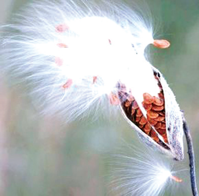
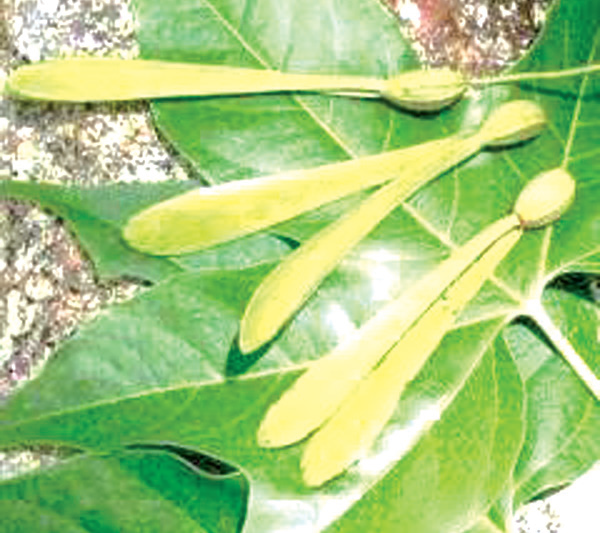
Figure 6.28: Asclepias Figure 6.29: Gyrocarpus
Feathery Appendages:
Seeds or fruits may have feathery appendages which greatly increase their buoyancy to disperse to high altitudes. Examples: Vernonia and Asclepias.
Censor mechanisms:
The fruits of many plants open in such a way that the seeds can escape only when the fruit is violently shaken by a strong wind. Examples: Aristolochia and Poppy.
Guess!! Who am I QUESTION MARK I am dispersed by ant and I have caruncle.
Dispersal of seeds and fruits by water usually occurs in those plants which grow in or near water bodies. Adaptation of hydrochory are
Obconical receptacle with prominent air spaces. Example: Nelumbo.
Presence of fibrous mesocarp and light pericarp. Example: Coconut.
Seeds are light, small, provided with aril which encloses air. Example: Nymphaea.
The fruit may be inflated. Examples: Heritiera littoralis.
Seeds by themselves would not float may be carried by water current. Example: Coconut.
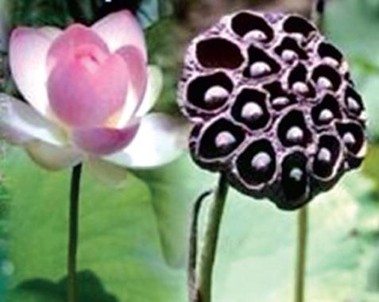
Figure 6.30: Nelumbo Figure 6.31: Coconut
Birds and mammals, including human beings play an efficient and important role in the dispersal
of fruit and seeds. They have the following devices.
1. Hooked fruit:
The surface of the fruit or seeds have hooks, OPEN BRACKET Xanthium CLOSE BRACKET, barbs OPEN BRACKET Andropogon CLOSE BRACKET, spines OPEN BRACKET Aristida CLOSE BRACKET by means of which they adhere to the body of animals or clothes of human beings and get dispersed.
2. Sticky fruits and seeds:
a. Some fruits have sticky glandular hairs by which they adhere to the fur of grazing animals.
Example: Boerhaavia and Cleome.
b. Some fruits have viscid layer which adhere to the beak of the bird which eat them and when
they rub them on to the branch of the tree, they disperse and germinate. Example: Cordia and
Alangium
3. Fleshy fruits:
Some fleshy fruits with conspicuous colours are dispersed by human beings to distant places after consumption. Example: Mango and Diplocyclos
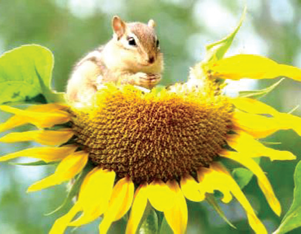
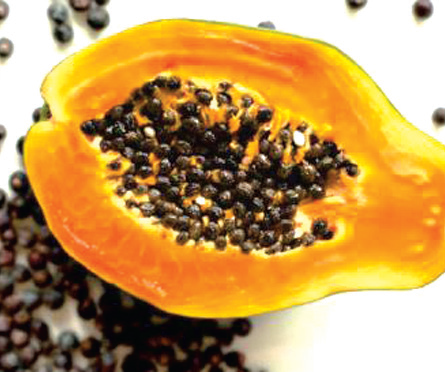
Figure 6.32: Sunflower Figure 6.33: Papaya
Some fruits burst suddenly with a force enabling to throw seeds to a little distance away from the plant. Autochory shows the following adaptations.
Mere touch of some plants causes the ripened fruit to explode suddenly and seeds are thrown
out with great force. Example: Impatiens OPEN BRACKET Balsam CLOSE BRACKET, Hura.
Some fruits when they come in contact with water particularly after a shower of rain, burst suddenly with a noise and scatter the seeds.Examples: Ruellia and Crossandra.
Certain long pods explode with a loud noise like cracker, scattering the seeds in all directions. Example: Bauhinia vahlii OPEN BRACKET Camel’s foot climber CLOSE BRACKET
As the fruit matures, tissues around seeds are converted into a mucilaginous fluid, due to which a high turgor pressure develops inside the fruit which leads to the dispersal of seeds.
Example: Ecballium elatrium OPEN BRACKET Squirting cucumber CLOSE BRACKET Gyrocarpus and Dipterocarpus.
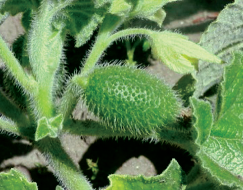
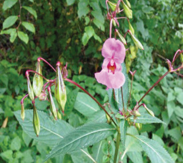
Figure 6.34: Ecballium Figure 6.35: Impatents
Human aided seed dispersal Seed Ball :
Seed ball is an ancient Japanese technique of encasing seeds in a mixture of clay and soil humus OPEN BRACKET also in cow dung CLOSE BRACKET and scattering them on to suitable ground, not planting of trees manually. This method is suitable for barren and degraded lands for tree regeneration and vegetation before monsoon period where the suitable dispersal agents become rare.
Guess QUESTION MARK what is atelochory or Achory QUESTION MARK Ecologically important days
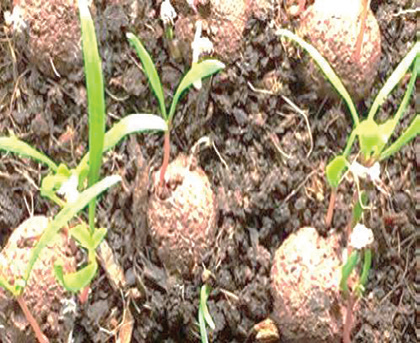
Figure 6.36: Seed ball
Ecologically important days
March 21 - World forest day
April 22 - Earth day
May 22 - World bio diversity day
June 05 - World environment day
July 07 - Van Mohostav day
September 16 - International Ozone day
Advantages of seed dispersal:
Seeds escape from mortality near the parent plants due to predation by animals or getting diseases and also avoiding competition.
Dispersal also gives a chance to occupy favourable sites for growth.
It is an important process in the movement of plant genes particularly this is the only method available for self-fertilized flowers and maternally transmitted genes in outcrossing plants.
Seed dispersal by animals help in conservation of many species even in human altered ecosystems.
Understanding of fruits and seed dispersal acts as a key for proper functioning and establishment of many ecosystems from deserts to evergreen forests and also for the maintenance of biodiversity conservation and restoration of ecosystems.
Ecology is a division of biology and deals with the study of environment in relation to organisms. Ecology is mainly divided into two branches Autecology and Synecology. The environment OPEN BRACKET surrounding CLOSE BRACKET includes physical, chemical and biological components. These factors can be classified into living OPEN BRACKET biotic CLOSE BRACKET and non-living OPEN BRACKET abiotic CLOSE BRACKET, which make the environment of an organism. The ecological factors are meaningfully grouped into four classes, which are as follows: 1. Climatic factors 2. Edaphic factors 3. Topographic factors 4. Biotic factors.
Climate is one of the important natural factors controlling the plant life. The climatic factors includes light, temperature, water, wind, fire, etc. Edaphic factors, the abiotic factors related to soil, include the physical and chemical composition of the soil formed in a particular area. The surface features of earth are called topography. Topographic influence on the climate of any area is determined by the interaction of solar radiation, temperature, humidity ,rainfall, latitude and altitude. The interactions among living organisms, the plants and animals are called biotic factors, which may cause marked effects upon vegetation. The modifications in the structure of organisms to survive successfully in an environment are called adaptations of organisms. Based on the habitats and the corresponding adaptations of plants, they are classified into 1 CLOSE BRACKET Hydrophytes 2 CLOSE BRACKET Xerophytes 3 CLOSE BRACKET Mesophytes 4 CLOSE BRACKET Epiphytes and 5 CLOSE BRACKET Halophytes. The dissemination of seeds and fruits to various distances from the parent plant is called seed and fruit dispersal. It takes place with the help of ecological factors such as wind, water and animals.
1. Arrange the correct sequence of ecological hierarchy starting from lower to higher level.
a CLOSE BRACKET Individual organism linked to Population Landscape linked to Ecosystem
b CLOSE BRACKET Landscape linked to Ecosystem linked to Biome linked to Biosphere
c CLOSE BRACKET community linked to Ecosystem linked to Landscape linked to Biome
d CLOSE BRACKET Population linked to organism linked to Biome linked to Landscape
2. Ecology is the study of an individual species is called
1 CLOSE BRACKET Community ecology
2 CLOSE BRACKET Autecology
3 CLOSE BRACKET Species ecology
4 CLOSE BRACKET Synecology
a CLOSE BRACKET 1only
b CLOSE BRACKET 2 only
c CLOSE BRACKET 1 and 4 only
d CLOSE BRACKET 2 and 3 only
3. A specific place in an ecosystem, where an organism lives and performs its functions is
a CLOSE BRACKET habitat
b CLOSE BRACKET niche
c CLOSE BRACKET landscape
d CLOSE BRACKET biome
4. Read the given statements and select the correct option.
1 CLOSE BRACKET Hydrophytes possess aerenchyma to support themselves in water.
2 CLOSE BRACKET Seeds of Viscum are positively photoblastic as they germinate only in presence of light.
3 CLOSE BRACKET Hygroscopic water is the only soil water available to roots of plant growing in soil as it is present inside the micropores.
4 CLOSE BRACKET High temperature reduces use of water and solute absorption by roots.
A1,2 and 3 only
b CLOSE BRACKET 2,3 and 4
c CLOSE BRACKET 2 and 3 only
d CLOSE BRACKET 1 and 2 only
5. Which of the given plant produces cardiac glycosides QUESTION MARK
a CLOSE BRACKET Calotropis
b CLOSE BRACKET Acacia
c CLOSE BRACKET Nepenthes
d CLOSE BRACKET Utricularia
6. Read the given statements and select the correct option.
1 CLOSE BRACKET Loamy soil is best suited for plant growth as it contains a mixture of silt, sand and clay.
2 CLOSE BRACKET The process of humification is slow in case of organic remains containing a large amount of
lignin and cellulose.
3 CLOSE BRACKET Capillary water is the only water available to plant roots as it is present inside the micropores.
4 CLOSE BRACKET Leaves of shade plant have more total chlorophyll per reaction centre, low ratio of chl a and
chl b are usually thinner leaves.
a CLOSE BRACKET 1, 2 and 3 only
b CLOSE BRACKET 2, 3 and 4 only
c CLOSE BRACKET 1, 2 and 4 only
d CLOSE BRACKET 2 and 3 only
7. Read the given statements and select the correct option.
Statement A : Cattle do not graze on weeds of Calotropis.
Statement B : Calotropis have thorns and spines, as defense against herbivores.
a CLOSE BRACKET Both statements A and B are incorrect.
b CLOSE BRACKET Statement A is correct but statement B is incorrect.
c CLOSE BRACKET Both statements A and B are correct but statement B is not the correct explanation
of statement A.
d CLOSE BRACKET Both statements A and B are correct and statement B is the correct explanation of
statement A.
8. In soil water available for plants is
a CLOSE BRACKET gravitational water
b CLOSE BRACKET chemically bound water
c CLOSE BRACKET capillary water
d CLOSE BRACKET hygroscopic water
9. Read the following statements and fill up the blanks with correct option.
i CLOSE BRACKET Total soil water content in soil is called dash
ii CLOSE BRACKET Soil water not available to plants is called dash
iii CLOSE BRACKET Soil water available to plants is called dash
|
OPEN BRACKET 1 CLOSE BRACKET |
OPEN BRACKET 2 CLOSE BRACKET |
OPEN BRACKET 3 CLOSE BRACKET |
OPEN BRACKET a CLOSE BRACKET |
Holard |
Echard |
Chresard |
OPEN BRACKET b CLOSE BRACKET |
Echard |
Holard |
Chresard |
OPEN BRACKET c CLOSE BRACKET |
Chresard |
Echard |
Holard |
OPEN BRACKET d CLOSE BRACKET |
Holard |
Chresard |
Echard |
10. Column 1 represent the size of the soil particles and Column 2 represents type of soil components. Which of the following is correct match for the Column 1 and Column 2.
Column - 1 Column - 2
1 CLOSE BRACKET. 0.2 to 2.00 mm 1 CLOSE BRACKET Slit soil
2 CLOSE BRACKET Less than 0.002 mm 2 CLOSE BRACKET Clayey soil
3 CLOSE BRACKET 0.002 to 0.02 mm 3 CLOSE BRACKET Sandy soil
4 CLOSE BRACKET 0.002 to 0.2 mm 4 CLOSE BRACKET Loamy soil
|
1 |
2 |
3 |
4 |
|
a CLOSE BRACKET |
2 |
3 |
4 |
1 |
|
b CLOSE BRACKET |
4 |
1 |
3 |
2 |
|
c CLOSE BRACKET |
3 |
2 |
1 |
4 |
|
D close bracket |
None of the above |
|
|
|
|
11. The plant of this group are adapted to live partly in water and partly above substratum and free from water
a CLOSE BRACKET Xerophytes
b CLOSE BRACKET Mesophytes
c CLOSE BRACKET Hydrophytes
d CLOSE BRACKET Halophytes
12 . Identify the A, B, C and D in the given table
Interaction |
Effects on species X |
Effects on species Y |
Mutualism |
A |
positive |
B |
positive |
negative |
Competition |
negative |
C |
D |
negative |
0 |
|
A |
B |
C |
D |
a CLOSE BRACKET |
positive |
Parasitism |
negative |
Amensalism |
b CLOSE BRACKET |
negative |
Mutalism |
positive |
Competition |
c CLOSE BRACKET |
positive |
Competition |
OPEN BRACKET 0 CLOSE BRACKET |
Mutalism |
d CLOSE BRACKET |
OPEN BRACKET 0 CLOSE BRACKET |
Amensalism |
positive |
Parasitism |
13. Ophrys an orchid resembling the female of an insect so as to able to get pollinated is due to phenomenon of
a CLOSE BRACKET Myrmecophily
b CLOSE BRACKET Ecological equivalents
c CLOSE BRACKET Mimicry
d CLOSE BRACKET None of these
14. A free living nitrogen fixing cyanobacterium which can also form symbiotic association with the water fern Azolla
a CLOSE BRACKET Nostoc
b CLOSE BRACKET Anabaena
c CLOSE BRACKET chlorella
d CLOSE BRACKET Rhizobium
15. Pedogenesis refers to
a CLOSE BRACKET Fossils b CLOSE BRACKET Water
c CLOSE BRACKET Population d CLOSE BRACKET Soil
16. Mycorrhiza promotes plant growth by
a CLOSE BRACKET Serving as a plant growth regulators
b CLOSE BRACKET Absorbing inorganic ions from soil
c CLOSE BRACKET Helping the plant in utilizing atmospheric nitrogen
d CLOSE BRACKET Protecting the plant from infection
17. In a fresh water environment like pond, rooted autotrophs are
a CLOSE BRACKET Nymphaea and typha
b CLOSE BRACKET Ceratophyllum and Utricularia
c CLOSE BRACKET Wolffia and pistia
d CLOSE BRACKET Azolla and lemna
18. Match the following and choose the correct combination from the options given below:
Column 1 OPEN BRACKET Interaction CLOSE BRACKET Column 2 OPEN BRACKET Examples CLOSE BRACKET
1. Mutualism 1 CLOSE BRACKET. Trichoderma and Penicillium
2. Commensalism 2 CLOSE BRACKET. Balanophora, Orobanche
3. Parasitism 3 CLOSE BRACKET. Orchids and Ferns
4. Predation 4 CLOSE BRACKET. Lichen and Mycorrhiza
5. Amensalism 5 CLOSE BRACKET. Nepenthes and Diaonaea
|
1 |
2 |
3 |
4 |
5 |
a CLOSE BRACKET |
1 |
2 |
3 |
4 |
5 |
b CLOSE BRACKET |
2 |
3 |
4 |
5 |
1 |
c CLOSE BRACKET |
3 |
4 |
5 |
1 |
2 |
d CLOSE BRACKET |
4 |
3 |
2 |
5 |
1 |
19. Sticky glands of Boerhaavia and Cleome support
a CLOSE BRACKET Anemochory b CLOSE BRACKET Zoochory c CLOSE BRACKET Autochory d CLOSE BRACKET Hydrochory
20. Define ecology.
21. What is ecological hierarchy QUESTION MARK Name the levels of ecological hierarchy.
22. What are ecological equivalents QUESTION MARK Give one example .
23. Distinguish habitat and niche
24. Why are some organisms called as eurythermals and some others as stenohaline QUESTION MARK
25. ‘Green algae are not likely to be found in the deepest strata of the ocean’. Give at least one reason.
26. What is Phytoremediation QUESTION MARK
27. What is Albedo effect and write their effects QUESTION MARK
28. The organic horizon is generally absent from agricultural soils because tilling, Example, plowing, buries organic matter. Why is an organic horizon generally absent in desert soils QUESTION MARK
29. Soil formation can be initiated by biological organisms. Explain how QUESTION MARK
30. Sandy soil is not suitable for cultivation. Explain why QUESTION MARK
31. Describe the mutual relationship between the fig and wasp and comment on the phenomenon that operates in this relationship.
32. Lichen is considered as a good example of obligate mutualism. Explain.
33. What is mutualism QUESTION MARK Mention any two examples where the organisms involved are commercially exploited in modern agriculture.
34. List any two adaptive features evolved in parasites enabling them to live successfully on their host QUESTION MARK
35. Mention any two significant roles of predation plays in nature.
36. How does an orchid ophrys ensures its pollination by bees QUESTION MARK
37. Water is very essential for life. Write any three features for plants which enable them to survive in water scarce environment.
38. Why do submerged plants receive weak illumination than exposed floating plants in a lake QUESTION MARK
39. What is vivipary QUESTION MARK Name a plant group which exhibits vivipary.
40. What is thermal stratification QUESTION MARK Mention their types.
41. How is rhytidome act as the structural defence by plants against fire QUESTION MARK
42. What is myrmecophily QUESTION MARK
43. What is seed ball QUESTION MARK
44. How is anemochory differ from zoochory QUESTION MARK
45. What is co evolution QUESTION MARK
46. Explain Raunkiaer classification in the world’s vegetation based on the temperature.
47. List out the effects of fire to plants.
48. What is soil profile QUESTION MARK Explain the characters of different soil horizons.
49. Give an account of various types of parasitism with examples.
50. Explain different types of hydrophytes with examples.
51. Enumerate the anatomical adaptations of xerophytes.
52. List out any five morphological adaptations of halophytes.
53. What are the advantages of seed dispersal QUESTION MARK
54. Describe dispersal of fruit and seeds by animals.
Antibiosis:
An association of two organisms which is harmful to one of them.
Biome:
A major regional community of plants and animals with similar life forms and environmental conditions.
Biosphere:
The envelope containing all living organisms on earth.
Community:
A group of organism living in the same place.
Flora:
The kinds of plants in region
Frugivores:
Fruit eating organisms
Hekistotherms:
OPEN BRACKET Temperature less than 70°C CLOSE BRACKET Where very low temperature prevails and the dominant vegetation is alpine vegetation.
Landscape:
The visible features of an area of land.
Lianes:
Twining vines with woody stems, common in forest of warm climate.
Megatherms:
OPEN BRACKET Temperature more than 240 degree celsius CLOSE BRACKET Where high temperature prevails throughout the year and the dominant vegetation is tropical rain forest.
Mesotherms:
OPEN BRACKET Temperature ranges between 170 degree celsius and 240 degree celsius Where high temperature alternates with low temperature and the dominant vegetation is tropical deciduous forest.
Microtherms:
OPEN BRACKET Temperature ranges between 70 degree celsius and 170 degree celsius CLOSE BRACKET Where low temperature prevails and the dominant vegetation is mixed coniferous forest.
Population:
A group of individuals of a single species.
Scotoactive type of stomata:
Stomata opens during night in succulent plants and closes during the day.
Vivipary:
When seeds or embryos begin to develop before they detach from the parent.
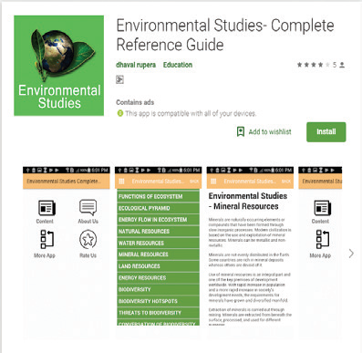
Principles of Ecology
Let us know about the Environmental Studies-Complete Reference Guide in detail.
Steps
Type the URL or scan the QR code to open the activity page then Introduction page will open.
Click on the Content icon in the introduction page.
Click on the topic you like.
To know more applications related to this title click on More apps
URL: https:SLASHSLASHplay.google.comSLASHstoreSLASHappsSLASHdetails QUESTION MARKid=com.dhavaldev.EnvironmentalStudies